THE LAST OF US PART I - FAN PAGE
Una historia de supervivencia, pérdida y redención
Una historia de supervivencia, pérdida y redención
Canción corta creada por nosotros:
The Last of Us Parte I es una experiencia narrativa intensa, situada en un mundo postapocalíptico devastado por un hongo letal. A través de una jugabilidad visceral y cinematográfica, vivirás la historia de Ellie mientras lucha con su pasado, sus decisiones y la brutalidad del mundo que la rodea. Cada momento está cargado de emoción, tensión y belleza cruda.
The Last of Us, saga galardonada con más de 57 nominaciones y 39 premios (entre ellos varios Game of the Year), cuenta con una puntuación de 89 en Metacritic. Fue desarrollada por Naughty Dog y se sitúa entre los títulos más aclamados de todos los tiempos. Mezcla de acción y aventura, la historia nos lleva a un mundo postapocalíptico, siguiendo a dos supervivientes: Joel y Ellie.
El juego original fue lanzado en 2013 para PS3 y vendió 3.4 millones de copias en sus primeras 3 semanas. En 2014 llegó la versión remasterizada para PS4. En 2020 se lanzó Parte II, seguido de su versión remasterizada para PS5 en 2024. Finalmente, en 2023 y 2025, las entregas llegarían también a PC.
Debido a su enorme éxito, HBO estrenó en 2023 la primera temporada de la serie basada en el juego, con una puntuación de 84 en Metacritic. La segunda temporada se estrenó el 13 de abril de 2025. La producción ha recibido elogios por su fidelidad emocional y narrativa.
En 2013, Joel pierde a su hija durante los primeros días del brote de infección. Veinte años después, trabaja como contrabandista y es encargado de escoltar a Ellie, una adolescente inmune al virus, a cambio de suministros. Junto a Tess, su compañera, descubren la importancia de Ellie para una posible cura. Tras la muerte de Tess y múltiples eventos trágicos, Joel y Ellie fortalecen su vínculo. Finalmente, Joel decide salvar a Ellie de una cirugía letal que podría haber salvado a la humanidad, y le miente para protegerla emocionalmente.
El juego combina sigilo, acción en tercera persona y exploración. Puedes enfrentar a enemigos infectados o humanos con armas, recursos o evitando el combate. Existen ajustes de dificultad, mejoras de equipo y numerosos coleccionables opcionales que enriquecen la narrativa. También se incluyen puzzles simples que ayudan a avanzar.
Aunque hay rumores constantes, Naughty Dog no ha confirmado oficialmente el desarrollo de una tercera parte. Los fans deberán esperar futuras actualizaciones mientras disfrutan de los títulos actuales y la serie.
✔️ Ganador de más de 300 premios a Juego del Año.
✔️ Una narrativa emocionalmente poderosa con personajes inolvidables.
✔️ Banda sonora compuesta por Gustavo Santaolalla, que acompaña cada momento con alma.
✔️ Disponible ahora en PS5 y próximamente en PC con mejoras gráficas y contenido adicional.
Escucha una de las piezas principales del juego:
La protagonista principal. Fuerte, decidida y marcada por su pasado. Su viaje es el centro emocional del juego.
Figura paterna para Ellie. Su historia es profunda y compleja, llena de decisiones difíciles y consecuencias.
Un personaje que desafía la percepción del jugador. Guerrero hábil, con una motivación muy personal.
The Last of Us Parte II Remastered fue lanzado para PS5 en enero de 2024, incluyendo:
Además, se ha confirmado el lanzamiento oficial para PC en 2025. El port estará optimizado para teclado, ratón y gráficas de alto rendimiento.
La aclamada serie de HBO adapta la historia del primer juego con una fidelidad emocional impresionante. Protagonizada por Pedro Pascal como Joel y Bella Ramsey como Ellie, la serie recibió elogios por su guion, actuaciones y ambientación postapocalíptica.
La segunda temporada adaptará parte de la historia de The Last of Us Parte II, manteniendo el tono emocionalmente intenso y los dilemas morales del videojuego.
Bella Ramsey regresa como Ellie, y Pedro Pascal como Joel. La temporada cubrirá los eventos más relevantes del segundo juego, centrándose en temas como la venganza, el duelo y el perdón.
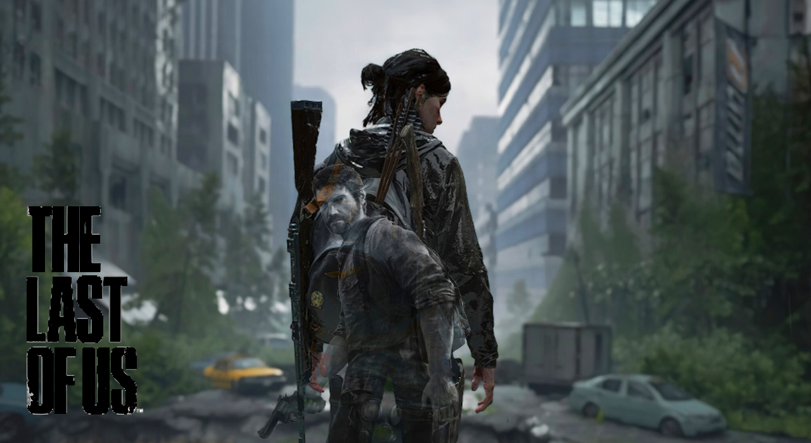
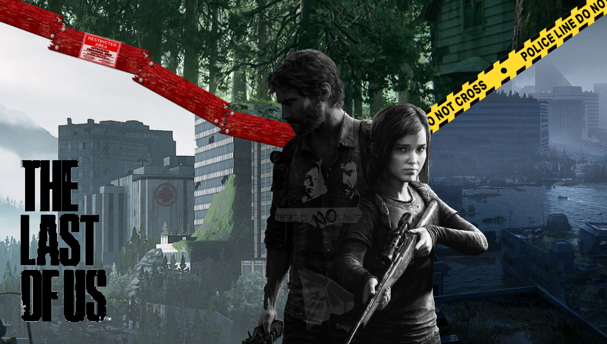
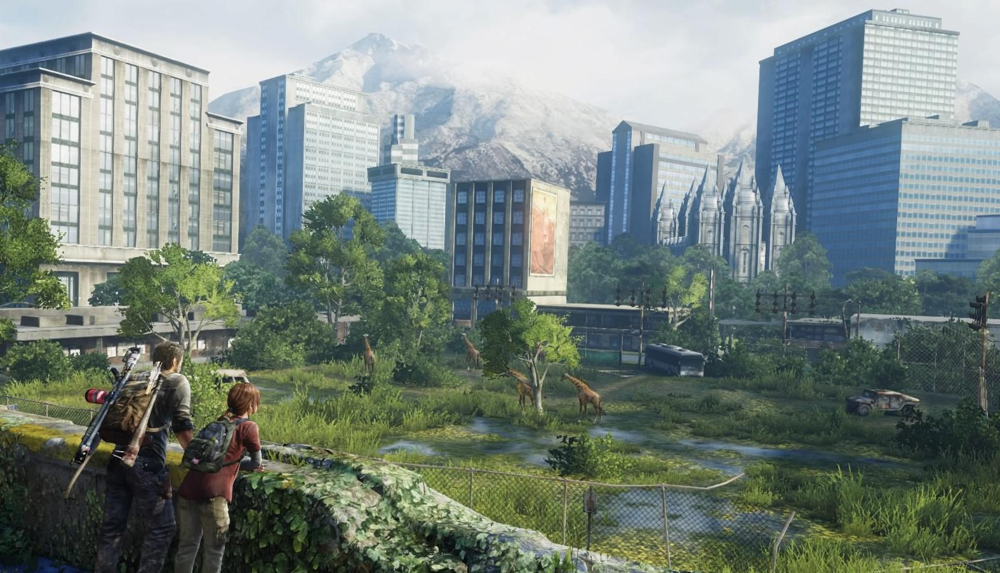
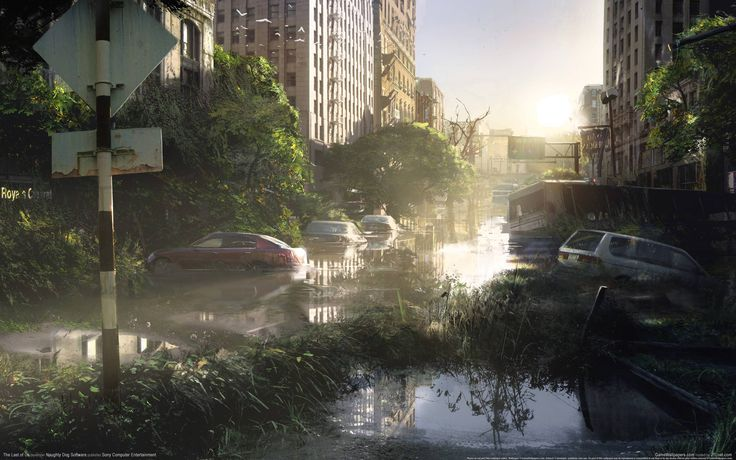
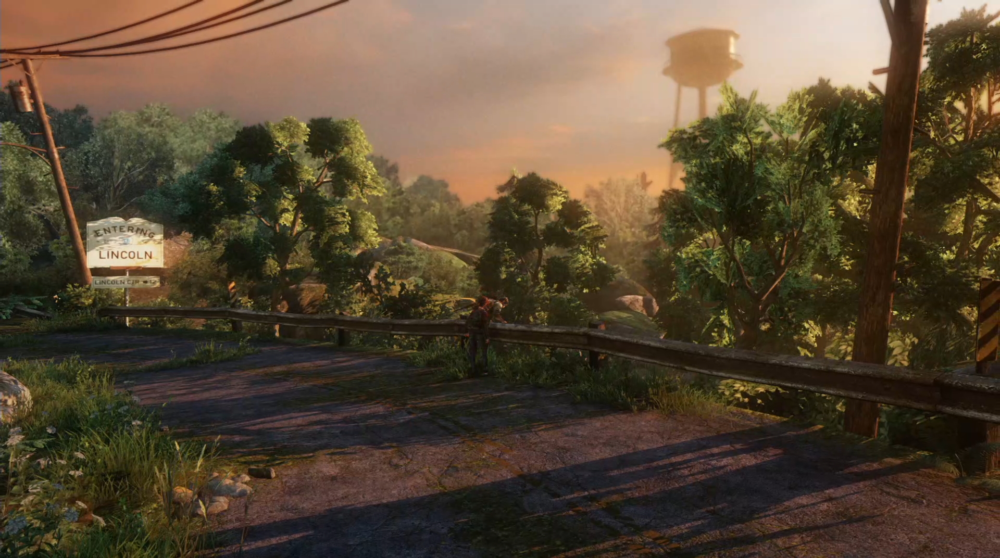
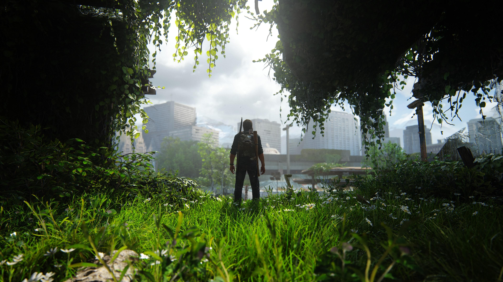
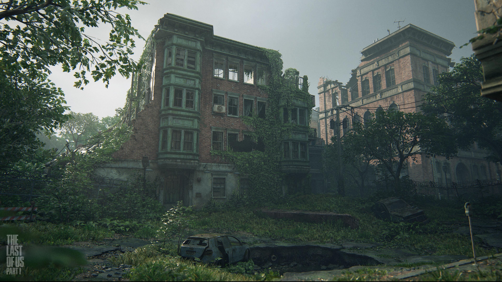
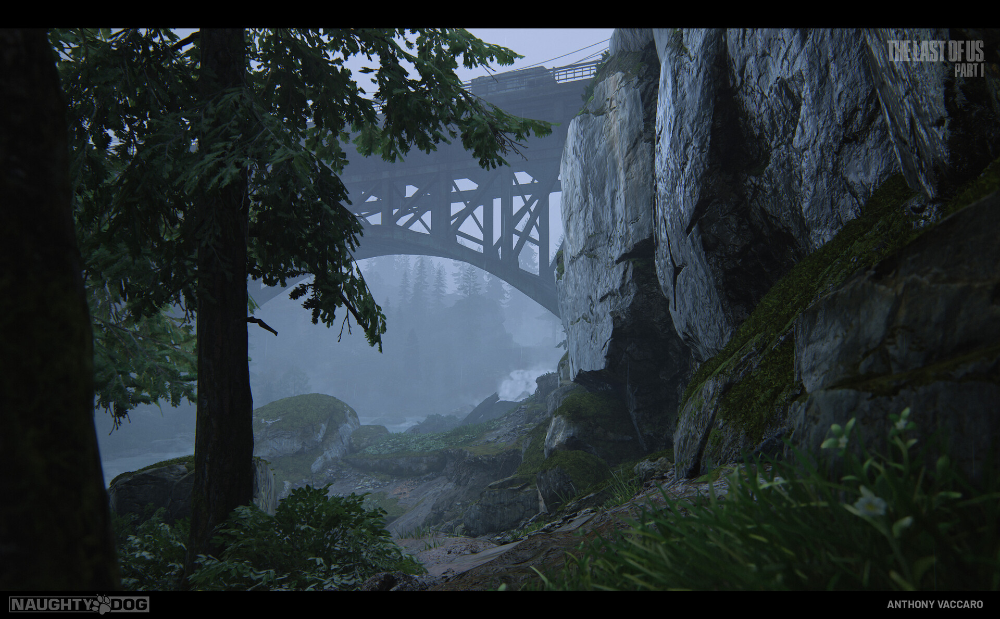
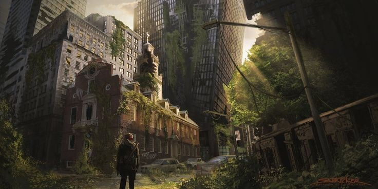
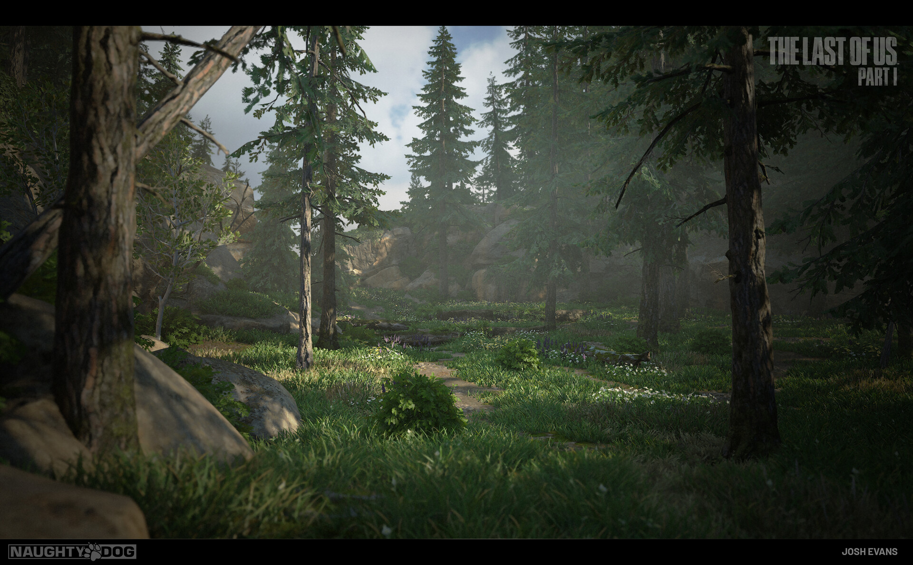
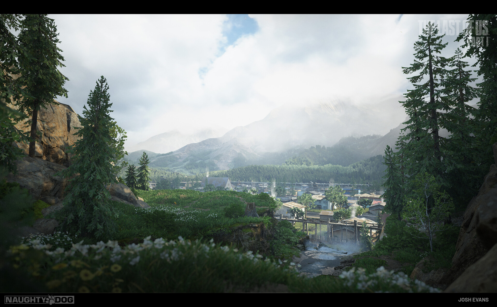
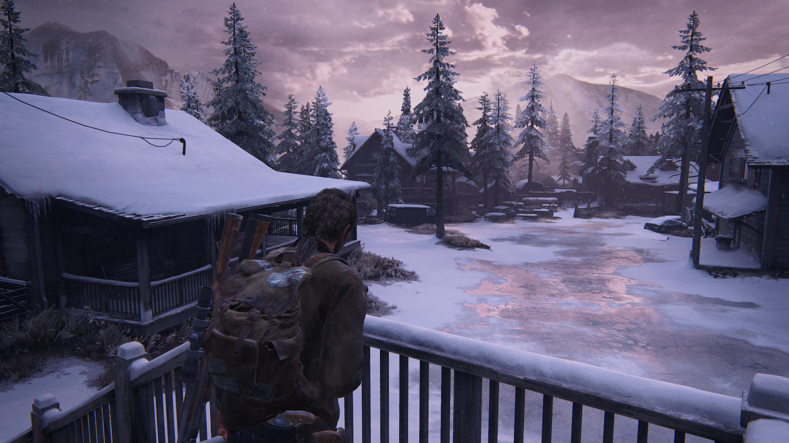
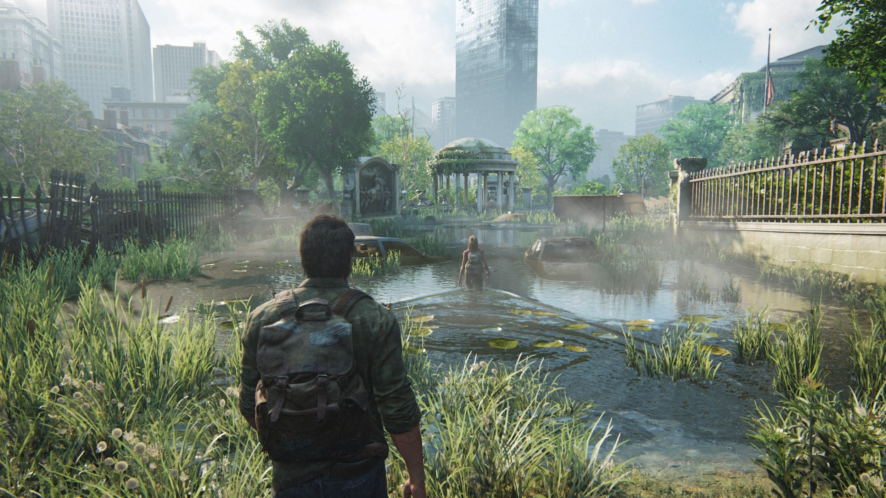
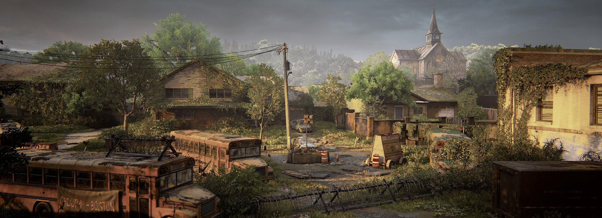
Primero debes jugar The Last of Us Parte I, y luego The Last of Us Parte II, ya que la historia continúa directamente.
Sí, la serie sigue de forma fiel la historia del primer juego, con añadidos narrativos. La segunda temporada adapta la Parte II.
La banda sonora fue compuesta por Gustavo Santaolalla en ambas entregas.
Sí. Las remasterizaciones traen mejoras gráficas, rendimiento optimizado para PS5, y contenido adicional.
Depende del punto de vista. Sus decisiones son moralmente ambiguas, y esa complejidad define su personaje.
No. Ellie es inmune, pero no existe una cura desarrollada. Ese dilema es clave en la narrativa.
Se ha estrenado este año, en 2025, y adapta los eventos del segundo juego.
Disponible en PS4, PS5 y en PC.
Si te gusta esta fan page y quieres ayudar a mantenerla viva, ¡puedes apoyarnos en Patreon! Cada aporte permite seguir mejorando el contenido, añadir más secciones, rendir homenaje a este increíble universo y que la profe nos ponga buena nota :D.
Tu ayuda es vital para mantener este rincón para fans ❤️
Estamos desarrollando una versión expandida de esta fan page con más contenido interactivo, entrevistas, historia detallada, mapas, minijuegos y mucho más. ¡Pero necesitamos tu apoyo para hacerlo realidad!
450€ recaudados · 45% del objetivo
Rol real: Diseño visual, colores, programación HTML y estilos CSS
Rol ficticio: Diseñadora de entornos postapocalípticos en Seattle.
Rol real: Diseño de imágenes originales, recolección de imagenes de la galería e información del juego
Rol ficticio: Responsable de IA de enemigos y comportamiento de infectados.
Rol real: Producción de audio y diseño del logotipo del equipo
Rol ficticio: Directora de arte para cinemáticas clave en el juego.
Rol real: Realización del vídeo GamePlay del Videojuego
Rol ficticio: Compositor asistente junto a Gustavo Santaolalla.
Rol real: Creación de una fuente de texto original
Rol ficticio: Guionista de diálogos entre Ellie y Dina.
Rol real: Pasividad Negligente
Rol ficticio: Pasividad Negligente